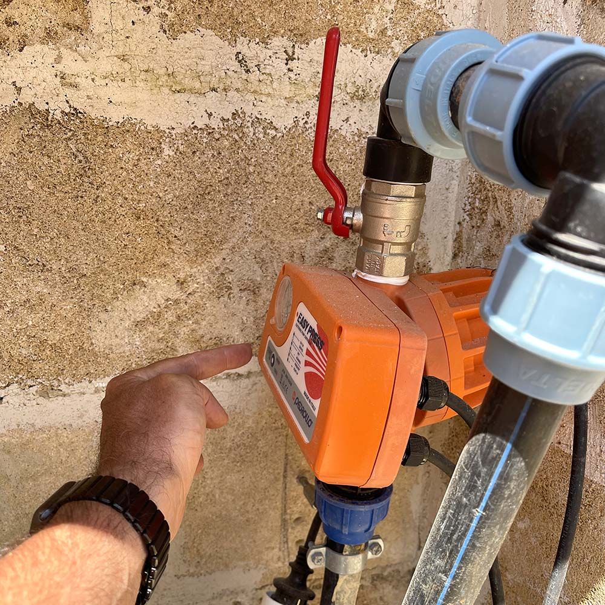
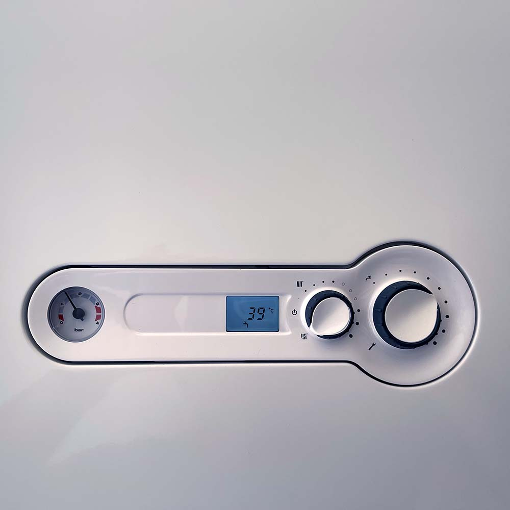
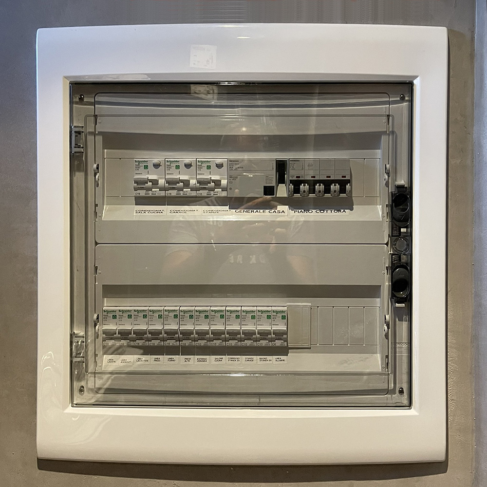
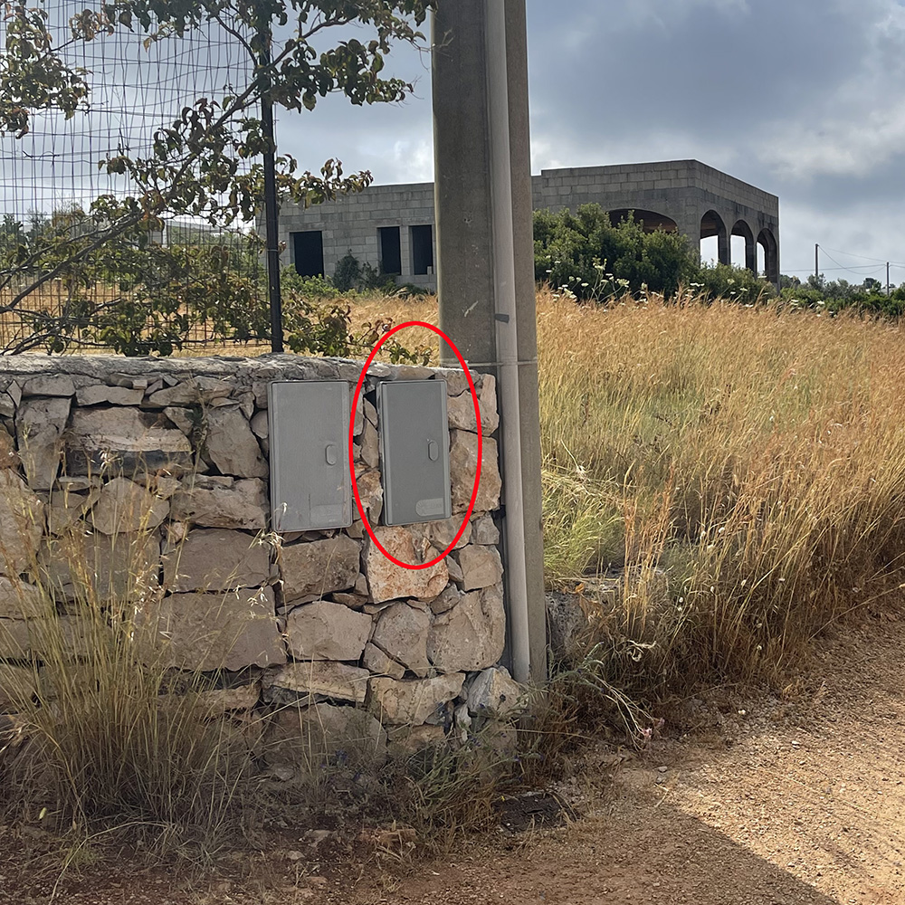

Salento · Apulia · Italy
D · S
Guest Guide · 2026 Edition
Villa
Crea
Castrignano del Capo · South Salento
A note from us
Welcome
to Villa Crea
Thank you for choosing Villa Crea for your stay in Salento. Designed by the architect Zanaroli, the villa is a refuge of charm overlooking the crystal-clear waters at the southern tip of Apulia, a few kilometres from Santa Maria di Leuca.
We have put together this guide to help you make the most of your time here — from the practical things about the house to our favourite restaurants, from the beaches we love to three ready-made day itineraries for discovering the most authentic South Salento.
For anything you need, we are just a message away. We hope you have an unforgettable stay — and a sunset by the pool you'll remember for a long time.
Carlo · Designsuite
+39 335 6810 310 · carlo@designsuite.it
In this guide
Everything you need,
at a glance
At a glance
The essentials,
on one page
Wi-Fi
villacre@network password · note the @ symbol at the end
Check-in / Check-out
16:00–19:00 · by 10:00times to confirm with your host
Address
SC Mattara, sncMarina di Felloniche · 73040 Castrignano del Capo (LE)
Host · 24/7
+39 335 6810 310WhatsApp preferred · English & Italian
✆
Message us on WhatsApp
We reply within minutes, in English or Italian
Check-in
Normally someone will meet you to hand over the keys and the gate remote, and show you around. In some cases a self check-in can be arranged: keys and remote will be in a combination box near the entrance. For check-out, if you need to leave very early, we can arrange to collect the keys the evening before.
Five simple rules
Villa Crea is a place of quiet overlooking the sea. Just five small attentions are enough to respect its rhythms — and to truly enjoy your stay.
INo smoking indoors. You're welcome to smoke outside — just put cigarettes out properly and never leave candles or open fires burning when you go out or to sleep.
IIWater is precious. Villa Crea is not connected to the mains: water is delivered by tanker. Please close taps tightly, use the outside pool shower briefly, and let us know straight away if you notice any leak.
IIIWaste sorted into five streams: glass, paper, plastic & metal, organic, general waste. Bins are by the pedestrian gate. If sorting is done incorrectly, the bins are not collected and the local council fines the tenant €50 each time.
IVPool with extra care. Children in the pool must always be accompanied by an adult. No diving, no running along the edges, no glassware poolside. Please rinse off at the outside shower before getting in.
VTreat the house as your own. If something breaks, let us know straight away: we'll sort it out together, no drama. For larger damages, if needed, we'll use the deposit left on arrival.
Pets
Villa Crea is a villa designed for rest: quiet is one of its defining traits. We don't accept pets unless this has been specifically agreed before booking.
What you'll find in the villa
A quick overview of the home's comforts, so you can pack with confidence. Everything is ready for you when you arrive.
Bedrooms & bathrooms
- 4 bedrooms (2 doubles, 2 flexible twin/double)
- Up to 8 guests
- 3 bathrooms with shower (2 en-suite, 1 outdoor)
- Bed linen, bath and pool towels provided
- Hairdryer and courtesy toiletries
Kitchen
- Open-plan, fully equipped kitchen
- Dishwasher and combi oven (traditional + microwave)
- Nespresso coffee machine
- Kettle and toaster
- Crockery, cutlery and cookware for 8
TV & connectivity
- High-speed Wi-Fi
- Smart TV with built-in streaming apps
Outdoor
- 15 × 3 m pool with sea view
- Fully equipped outdoor kitchen
- Outdoor fridge
- Stone table for al fresco dining
- Outdoor living area with sofas
- Barbecue
- Outside shower
Services & utilities
- Air conditioning and heating
- Photovoltaic system
- Laundry room with washing machine
- Iron and ironing board
- Private parking with electric gate
Safety
- Torch in the laundry
- First-aid kit in the laundry, behind the door
- Fire extinguisher near the boiler
02
Section Two
Getting Here
The simplest way is Google Maps: the villa is registered, just search for "Villa Crea Designsuite" and follow the directions. For the final stretch, the photos here help you recognise the route.
By car, from the airports
The simplest way
Open Google Maps
and search Villa Crea Designsuite
The villa is registered. From Brindisi the drive takes about 1.5 hours, from Bari about 2.5 hours.
→ Open route in Google Maps
Coordinates
39°48'44" N
18°19'34" E
Important
Headlights must be on at all times when driving on the motorway, even during the day — it is the law in Italy. On the SS274 in high season, traffic builds up in the late afternoon: if you land after 17:00, allow a little extra time.
From Brindisi (≈ 1h 30')
SS16 towards Lecce, then Tangenziale Ovest SS694 exit Gallipoli, then SS101 → SS274 towards Santa Maria di Leuca, exit Castrignano del Capo.
From Bari (≈ 2h 30')
SS16 (E55) south to Brindisi and Lecce, then Tangenziale Ovest SS694 and from there the same route as from Brindisi. Same final exit: Castrignano del Capo.
The final stretch
Once you leave the SS274, these are your visual reference points. Google Maps will guide you all the way, but if the signal drops, these photos are all you need.
Parking
On arrival you'll find an electric gate: we'll hand over the remote at check-in. Inside the property there's private parking reserved for guests. No booking needed.
Driving in Apulia
Driving here may feel a little chaotic at first, but you'll get used to it quickly. The secret is to adapt: you won't change the way locals drive in a week, but you'll find that, once the initial shock passes, the system works.
On the motorway
The speed limit is 130 km/h unless otherwise stated. Headlights stay on throughout — this is the law. Most motorways are tolled, and queues form at the booths in high season. If you have a Visa or Mastercard, use the automatic lanes marked "card": a few seconds and you're through.
Petrol stations
Most have two pumps side by side: fai da te (self-service) and servito (attended). The attended option is slightly more expensive. Your call whether the saving is worth the smell of fuel on your hands.
In town
Think of town streets as a pedestrian zone: cars, scooters and people will pull out from every angle, apparently without looking, expecting you to make room. Once you get the rhythm, it works — just use your wing mirrors a lot more than usual.
Parking lines
Blue lines · Paid parking. There's always a meter nearby with times and rates. Buy enough time, put the ticket on the dashboard. If there's no meter, the ticket is sold at the local tobacconist.
White lines · Free parking, sometimes only at certain times. Always check the signs.
Yellow lines · No parking. Reserved for residents, public offices, disabled parking.
Unofficial parking attendants
In many historic centres, unofficial attendants will wave you into a free spot and help you manoeuvre. They expect a tip of 50 cents – €1. Even so, always check the street signs: the attendant won't save you from a fine.
Fines
If you get a fine, the ticket explains how to pay. Most likely the text will be in Italian only — if anything's unclear, just message us.
03
Section Three
The House
A quiet conversation with the villa — what to expect from each room, how the appliances work, the small details that make you feel at home from the very first evening.
Living the villa
Villa Crea is a house that opens onto the sea and in return asks for a small bit of attention. The notes below cover the essentials — appliances, water, electricity — so that nothing comes between you and a long afternoon by the pool with the Adriatic in view.
Bedrooms
Four bedrooms: two doubles and two flexible (made up as doubles or as twins — please let us know in advance). Beds are made up on arrival, and bath and pool towels are provided for the entire stay.
Bathrooms
Three bathrooms with showers: two en-suite serving the double bedrooms and one outdoor, convenient for coming back from the pool. Please flush only small amounts of toilet paper: everything else goes in the bin.
Air conditioning
Salento nights are cool, and the house holds its temperature well: A/C is really only needed during the hottest weeks. Set it between 23 and 26 °C for sleeping, and switch it off whenever you leave the house. Try not to move constantly between heavily cooled rooms and the heat outside.
Furniture & furnishings
The fabrics are delicate. Please don't sit on sofas or armchairs in wet swimwear or damp clothes from the beach, and don't use self-tanners on the upholstery — some (especially Riemann P20) leave permanent stains.
Outdoor furniture & parasols
In the evening, or if you're out for the whole day, please bring the seat cushions indoors in case of rain. Always close the parasols when you go out or when the wind picks up: a sudden gust can damage them.
Doors and windows
When you go out, close and lock doors, windows and shutters: as well as for security, it protects against sudden rain and wind and from small wildlife. The windows have three positions: closed, open, and vasistas (tilted slightly inwards at the top to air the room).
Treat the house as if it were your own — it's the simplest way to enjoy your stay.
Utilities — water, boiler, electricity
All systems are active on arrival. Villa Crea also has a photovoltaic system that significantly reduces consumption. These pages are only for the rare occasion when something stops working.

Water system
If no water comes out of the taps, press the START button on the orange pump in the stone niche near the parking. The pump re-pressurises the system in a few seconds.

Boiler · hot water
The boiler is already on. It runs on gas cylinders: if hot water stops, one of the cylinders may have run out. Message us straight away on WhatsApp — we'll take care of it.

Fuse box
In case of a power cut, first switch off any high-draw appliances. The fuse box is in the laundry, behind the door: check that all switches are in the up position.

ENEL meter
If still no power, the main meter is in the low wall along the main road, about 100 m to the right of the pedestrian gate. Use the smallest key on the keyring to open the box and check the switch is up.
Tap water
Villa Crea isn't connected to the mains: water is delivered by tanker and stored in a cistern. It is safe for cooking, washing and showering, but not drinking. We leave you bottled water on arrival; you can buy more at the village shop.
In the house
A small torch lives in the
laundry, ready in case of an evening power cut.
Gas cylinders: they sit behind the stone wall in the parking area. If you smell gas, close the tap and call us.
Pool and garden
The pool is one of the heart of the house: 15 by 3 metres, with sea view, checked and cleaned three times a week. A few simple courtesies make sure everyone enjoys it.
Before getting in
A quick rinse at the outside shower: it keeps the pool clean and makes the water treatment last longer.
No diving
No diving, neither from the edge nor from the steps, and no running around the perimeter: the surface can be slippery.
No glass
Glasses and glass bottles are not allowed in the pool area. For poolside drinks we provide sturdy plastic tumblers.
Sun creams
Avoid lying on the loungers or seats with fresh self-tanner: it leaves permanent stains.
Children
Children must always be accompanied by an adult, even when wearing armbands or rings: no flotation aid replaces supervision.
Swimming at night
Night swimming isn't recommended. If you decide to swim after dark, turn the pool lights on and never go in alone.
The garden
The irrigation system runs automatically — usually early in the morning or in the evening, to save water — and is looked after by our caretaker. Nothing for you to do.
Insects and other wildlife
Apulia is a warm country and the countryside has its share of insects. None are dangerous, but a few small habits make the stay calmer:
- Don't leave doors and windows open in the evening with the lights on
- Use the plug-in mosquito repellents around the house
- If you're dining out at night, cover arms and legs or use repellent
Good to know
The
sunset from Villa Crea is a moment. The pool faces west onto the sea, and in summer the sun drops straight onto the water. Worth planning at least one evening with an aperitif by the pool.
Appliances and TV
All appliances are energy class A+ and intuitive to use. A brief overview below.
Dishwasher
Run it when it's full. Load dishes already rinsed of food. To use: select the programme, place the tablet in its slot, press "START", close the door.
Washing machine
Detergent and softener are already loaded. Add your clothes, select the programme, press "START".
Combi oven
Dual function: traditional and microwave. Traditional controls are on the left of the central dial, microwave on the right. Don't put metal items in the microwave.
Coffee machine
Nespresso, with capsules. We leave a small courtesy supply on arrival; refills are easy to find at the village supermarket.
Smart TV
The living-room is fitted with a Smart TV with the main streaming apps built in — Netflix, Prime Video, Disney+, YouTube, RaiPlay and so on. Sign in with your own account to watch your content. At check-out, please sign out of your accounts on the apps.
Outdoor kitchen
A proper kitchen, fully equipped for cooking and dining outside: hob, sink, outdoor fridge and barbecue. Designed for long grilling evenings and fish dinners, with the stone table within easy reach.
Air conditioning
The units have a small display with the essential controls: Mode selects the mode (cooling, heating, dehumidifying), Fan the fan speed, the arrows adjust the temperature.
Something broken? Easy
If anything stops working, message us on WhatsApp straight away: we'll be on it the same day.
Waste sorting
In Castrignano del Capo rubbish is collected on a schedule and separated into five streams. Sorting correctly is one of the simplest and most useful things you can do.
The five streams
Glass
Bottles and jars, rinsed and without lids. Metal caps go with plastic & metal.
Paper
Paper, cardboard, magazines, boxes. No oily or food-soiled paper.
Plastic & metal
Bottles, containers, cans, caps. Please flatten to reduce volume.
Organic
Food scraps, eggshells, coffee grounds. In the dedicated compostable bag.
General waste
Anything that doesn't fit the other four. There should be very little.
Where
The bins are outside the property, beside the pedestrian gate.
Collection schedule
The full calendar is on the kitchen wall. We update it at the start of each season as it can change. Generally: organic three times a week, general waste and recyclables on alternating days. Take the bins out the evening before, by 22:00 at the latest.
Important
If sorting isn't done correctly, the operators won't collect the bins and the local council fines the tenant
€50 per incident. It's the rule we're asked to enforce most strictly.
04
Section Four
Services
The small attentions that make a stay easy — cleaning and linen changes already included, a few optional extras you can request, and a few lines on how we handle damages.
Cleaning and linen
At Villa Crea, weekly cleaning and a linen change are included. All we ask is that you keep the house tidy at the changeover, and lend a small hand at check-out.
What's included
Weekly cleaning with linen change, both for one-week stays and for the changeovers within longer stays.
Outdoor cleaning on alternate days (pool area, terraces, outdoor kitchen).
Final cleaning after your check-out, already included in the price.
Linen changes
On arrival you'll find beds made up and a supply of bath and pool towels for your stay. For two-week stays or longer, linen is changed at the beginning of each week, usually on the same day as check-in.
If the bedrooms are occupied at the time of the change, the staff will leave the fresh linen outside each room.
Optional extra services
Daily cleaning · on request, to be agreed before arrival.
Extra cleaning during your stay · €15/hour.
Extra bed linen change · €15 per set.
Extra bath and pool towels · €15 per set.
Private chef · on request, for private dinners or food experiences in the villa. Quote on request.
A small favour
At check-out, please run a dishwasher cycle with any dirty dishes, cutlery and pans, and leave the house tidy. Small things that make a real difference for those preparing the villa for the next guests.
Laundry, damages, check-out
Laundry
The villa has a washing machine: if you'd rather pack light, you can do laundry on the spot. There's a small clothes rack in the laundry room; alternatively, the garden chairs in full sun work very well.
Toiletries
Each bathroom has courtesy products and a hairdryer. If you use a particular brand and prefer to travel light, the main brands are easy to find at local supermarkets and pharmacies.
Sun creams
One small warning: some chemical-based sunscreens (especially "long-lasting" ones) can permanently stain bed linen and upholstery. Please avoid using Riemann P20 during your stay.
Damages
Small mishaps happen: a broken plate, a chipped glass. Please let us know as soon as it happens. For minor damages we'll ask you to reimburse before departure; for larger amounts we'll use the deposit left on arrival.
For us, it matters that things are handled with transparency and without tension: knowing about an issue immediately is far better than discovering it afterwards.
Check-out
Check-out is usually by 10:00 on the day of departure, but can be flexible. Normally the owner or caretaker is present to collect the keys and gate remote, and give you any final information. If you need to leave very early, we can collect the keys the evening before.
Lost luggage
If your bag doesn't arrive with you at the airport, go straight to the Lost & Found desk: they'll have you fill in a form with your flight details and your preference between self-collection or villa delivery. Self-collection is often faster. If you need help coordinating delivery to Villa Crea, message us.
05
Section Five
Exploring
Salento
The Salento peninsula is a mosaic of Baroque towns, golden beaches, country markets and ancient silence. Here are the places we love most, and three ready-made one-day itineraries for the lazier days.
Towns and cities
From Villa Crea everything is within easy reach by car: within an hour you can drive across the loveliest villages of the peninsula. Here are our favourites, in order of distance.
Santa Maria di Leuca
10 min · coast
The southernmost tip of Italy, where the Adriatic and Ionian seas meet. Beautiful Liberty-style villas on the seafront and boat trips out to the grottoes. Unmissable at sunset.
One of the "Most Beautiful Villages in Italy": white-stone old town, an unhurried atmosphere. Don't miss the Frantoi Ipogei, four underground olive mills carved into the rock (Scupola, Cicca, Perrone, Francescani Neri) along the "Via dei Frantoi Ipogei". One of the most evocative visits in the South Salento.
Info · IAT Specchia, Piazza del Popolo 8 · tel. 0833 536293
A refined, low-tourism centre. Don't miss the Quercia Vallonea, the "tree of a hundred knights" — one of the oldest oaks in Italy, on the road to Tricase Porto.
The old town sits on an islet ringed by 15th-century walls, connected to the mainland by a bridge. Narrow lanes, an early-morning fish market, sunset along the promenade.
Aragonese castle, white old town, cathedral with the Tree of Life mosaic floor (1163) and the bones of the Martyrs killed by the Turks in 1480.
Minor Baroque of great grace, surrounded by excellent wineries. Birthplace of the pasticciotto: it was invented here.
The Baroque masterpiece of Salento, carved in cream-coloured local limestone. Pedestrianised old town, Roman ruins, al fresco aperitivos. A full day at least.
Other places worth your time
The commercial and gastronomic heart of Salento: fine architecture, Italian boutiques, specialist food shops. A regular stop for those after shoes and good things to eat.
Corigliano d'Otranto
55 min · town
In the heart of Grecìa Salentina, where the griko dialect is still spoken. "Giardino di Sophia" runs philosophical tours of the castle (in English on request).
Another of the nine towns of Grecìa Salentina. Every August it hosts La Notte della Taranta, the Mediterranean's biggest festival of pizzica and popular music.
Grotta Zinzulusa
40 min · sea cave
A striking 150 m karst cave on the cobalt-blue Adriatic, near Castro. Stalactites, stalagmites, legends. Brief guided visits (tel. 0836 943812).
Capital of Primitivo: a pleasant town and home to one of Apulia's most important DOC wines. The wineries are well worth visiting, by appointment.
Just over the border in Basilicata, two and a half hours away. The Sassi are a UNESCO World Heritage site, and outside town you can visit the Crypt of Original Sin (by appointment, tel. 320 5350910). A full day, ideally two.
Recommended beaches & lidos
Villa Crea is minutes from the loveliest beaches of the South Salento. From Pescoluse to Riva di Ugento, on the Ionian coast, there's an almost unbroken ribbon of golden sand. To the east, the Adriatic coast is more varied: cliffs, coves, grottoes.
★
Lidos marked with a star are our favourites — the ones we recommend first.
Our favourites
Lido Marinelli · San Gregorio di Patù
5 min · Ionian
A stylish lido on a rocky stretch close to Santa Maria di Leuca. Bar and restaurant, ideal for your first day while waiting for check-in.
Balelido · Torre Mozza, Ugento
30 min · Ionian
One of the most exclusive lidos on the coast: white sand and full services.
Via Isole Egadi 6, Torre Mozza · tel. 0833 932405 ·
balelido.it
Lido Pineta · Fontanelle, Ugento
35 min · Ionian
Refined lido with an excellent range of services, restaurant, pine wood behind.
Località Fontanelle, SP91, Ugento · tel. 334 3130040 ·
lidopineta.it
Lido Venere · Pescoluse
20 min · Ionian
The white sand and crystal-clear waters of the "Maldives of Salento". Bar, gelateria and self-service restaurant with local dishes and fresh fish.
Corso Italia 3, Pescoluse-Posto Vecchio, Salve · tel. 320 6563779 ·
lidovenere.com
Lido Ficò · Marina di Marittima
40 min · Adriatic
On the Adriatic side, set in a low rocky cove with wooden walkways and sun deck. Mediterranean restaurant for lunch and a wellness area.
Via Litoranea 115, Marina di Marittima (Diso) · tel. 0833 1976078 ·
lidofico.it
Other lidos and beaches
Lido Gold · Salve
20 min · Ionian
White sand, intimate restaurant serving contemporary seafood cuisine.
Località Colleoni-Torre Pali, Salve · tel. 338 4299617 ·
lidogold.it
Lido Relax Leuca
10 min · Ionian
Exclusive lido on a low cliff, with full services.
SP214 46, Santa Maria di Leuca · tel. 392 4869105 ·
relaxleuca.it
Lido Pizzo · Taviano
40 min · Ionian
5 km south of Gallipoli, on the coast road. Full services, lovely sandy beach.
SS Litoranea Gallipoli-Leuca · tel. 0833 276978
Lido Sant'Anna · Marina di Ugento
40 min · Ionian
Family-friendly lido with kids' club, pool and restaurant. Great if you travel with children.
Marina di Ugento · tel. 0833 202551
Lido Cocoloco · Torre San Giovanni, Ugento
45 min · Ionian
Long sandy beach, beautiful waters, music and DJs.
Punta della Suina · Gallipoli
45 min · Ionian
Two sandy bays, cobalt waters, DJ sets: the spot for sunset aperitivos. Also good for lunch.
Lido Hotel La Roccia · Marina di Castro
40 min · Adriatic
Beautiful rocky stretch, crystal-clear water, restaurant.
Via Litoranea per Tricase, Marina di Castro · tel. 0836 979013
La Castellana · Otranto
1 h · Adriatic
On Via Porto Craulo, opposite Hotel La Plancia. Protected cove, perfect with children.
Via Porto Craulo, Otranto · tel. 328 9558929
Good to know
In the busier lidos, in August, booking sunbeds and a parasol in advance is strongly recommended. Indicative prices: €15–45 per day for two sun loungers and a parasol.
Markets and local shops
Going to the market is one of the most pleasant rituals of a holiday here: fruit and vegetables from the area, cheese cut to order, fish still flapping. Here's the weekly calendar and a few shops worth the detour.
Weekly markets
Monday · Lecce (Via del Mare stadium), Alessano
Tuesday · Tricase, Piazza del Mercato
Wednesday · Gallipoli (Via Alfieri), Otranto (Via Calamuri)
Thursday · Galatina (Via Genova), Castrignano del Capo (Piazza San Michele)
Friday · Specchia, Via XXV Aprile
Saturday · Maglie (Piazza M. Immacolata), Ugento (Piazza Italia)
Sunday · Marina di Leuca, Corso Cristoforo Colombo (July–September)
Antique markets
Always on Sundays, usually from 10:00 to 20:00: Vernole (1st Sunday of the month), Tricase (1st Sunday), Gallipoli (2nd Sunday), Lecce (last Sunday of the month all year, in Via XX Settembre).
Fish markets
The ports of Gallipoli and Otranto have fish markets from early morning until midday. At Marina di Leuca, with a very early start, you can buy directly from the fishermen. On days following rough seas, fresh catch is scarce or absent.
Shops and specialities
Pasticceria Ascalone · Galatina, Via Vittorio Emanuele 17. Where the pasticciotto was invented. Worth a stop, at least once.
Pasticceria Natale · Lecce, Via Trinchese 7. Ice cream and Lecce's traditional quince cheese.
Caseificio del Capo · Santa Maria di Leuca, Via Doppia Croce. Local cheeses, mozzarella made daily.
Vineria Renna · Santa Maria di Leuca, Via Tommaso Fuortes 21. Local wines.
Il Pasticciotto · Morciano di Leuca, Via San Martino 82. One of the best pasticciotti in the area.
L'Orecchietta · Morciano di Leuca, Corso Italia 169. Handmade fresh pasta.
Papier-mâché in Lecce
Salento is famous for the art of papier-mâché. Lecce's old town has dozens of workshops; one stands out: Bottega della Cartapesta, Via degli Acaja, a step from Piazza Sant'Oronzo. Also worth visiting is the small Museo della Cartapesta inside the Castello di Carlo V.
Three days, already planned
When you don't feel like planning, pick one of these. Three days tested by us: one of sea, one of Baroque, one slow.
Itinerary one
A day by the sea
- 09:30Set off for Pescoluse, the "Maldives of Salento". White sand, shallow water.
- 13:00Lunch at Lido Venere: Salento dishes and fresh fish right on the beach.
- 15:30Rest on the beach, a long walk along the shore.
- 18:00Aperitivo at Lido Marinelli, where Italy ends.
- 20:30Dinner at Farnari in Gemini: local cooking done right.
Itinerary two
A day of Baroque
- 09:00Drive to Lecce. Park outside the walls and enter on foot.
- 10:00Old town: Piazza Sant'Oronzo, Roman Amphitheatre, Basilica of Santa Croce.
- 13:00Lunch at Pescheria con Cottura: pick the fish, they tell you how to cook it.
- 15:00Papier-mâché Museum inside the Castello di Carlo V.
- 17:00Gelato at Pasticceria Natale in Via Trinchese.
- 19:30Aperitivo at 300mila Lounge Bar in Piazza Mazzini.
- 21:00Dinner at Trattoria Le Zie: real Apulian home cooking, in central Lecce.
Itinerary three
A slow day inland
- 10:00Specchia: stroll and visit the Frantoi Ipogei (info Pro Loco, 0833 536293).
- 12:00Tricase: the Quercia Vallonea, the "tree of a hundred knights".
- 13:30Lunch at Sante le Muse in Salve: farm-to-table cooking, produce from the garden.
- 16:00Corigliano d'Otranto: visit the castle and surroundings.
- 18:00Galatina: aperitivo and pasticciotto at Ascalone, where it was invented.
- 21:00Dinner at Farmacia dei Sani in Ruffano: Apulian cooking at its best.
Activities and sports
For guests who like to move: from boats to kitesurfing, from bikes to thermal spas. Within an hour from the villa there's plenty to choose.
Boat trips
Colaci Nautica · Santa Maria di Leuca. Excursions along the coast, hire with or without skipper. Tel. 0833 758936.
Salento in Barca · Gallipoli. Departures from Lungomare Marconi. Tel. 347 5710572.
Armatori Salentini · Marina di Leuca. Charters and trips. Tel. 0833 750208.
Kitesurfing and sailing
Smaré Sailing School · Santa Maria di Leuca. Tel. 0833 758110.
Local Salento Kitesurf · Torre San Giovanni. Tel. 328 4260226.
Bikes
Salento Bici Tour · Routes for couples, families, small groups. Tel. 346 0862717.
Horse riding
Complesso delle Rose · Torre Vado. Tel. 0833 1826288.
Gli Amici del Murgese · Alessano. Tel. 0833 781791.
Centro Ippico Itri · Gallipoli. Two-hour beach rides between Punta della Suina and Lido Pizzo (≈€45 per person). Tel. 340 4081000.
Tennis and golf
Circolo Tennis degli Ulivi · Tuglie. Tel. 347 6110339.
Circolo Tennis Maglie · Tel. 0836 427474.
Acaya Golf Club (18 holes) · Vernole. Tel. 0832 861385.
Karting
La Pista Salentina · Ugento. Italy's second-largest go-karting circuit: watch the races or rent a kart. Tel. 0833 93131.
Sea fishing
Pesca Turismo Attila II · Torre Vado harbour. Tel. 339 4102230.
Spas and beauty
Basiliani Resort & Spa · Otranto. Excellent spa with massages and treatments. Tel. 0836 802920.
Terme di Santa Cesarea · For thermal and wellness circuits. Tel. 0836 944070.
For kids
Splash Aquapark · Litoranea S.M. al Bagno, near Gallipoli. Water park with picnic area. Tel. 0833 273400.
Torre Guaceto · Nature reserve and marine area north of Brindisi, with little train, paths, bike hire. Tel. 0831 990882.
06
Section Six
Tastes
of Apulia
A curated selection of restaurants, organised by area. Those marked with a star are our favourites — the ones worth booking well ahead.
Our favourites
Eight addresses we truly love, from the nearest to the furthest. For all of them — especially in high season — book ahead.
★
Price band: € under 20 · €€ 20–40 · €€€ above 40 (per person, wine excluded).
Farmacia dei Sani · Ruffano
€€
Apulian cuisine of true quality by Valentina Rizzo, featured in Michelin and Identità Golose. Homemade pasta and excellent ingredients.
Lo Scalo · Marina di Novaglie
€€€
On the cliffs above the Adriatic, with an unforgettable view. Fresh fish, sophisticated seafood cuisine.
Via A. Vespucci, Marina di Novaglie · tel. 0833 533488 ·
loscalo.net
Farnari · Gemini (Ugento)
€€
Contemporary locanda with the author cuisine of Eugenio Pindinello. Excellent ingredients, refined execution. A real discovery.
Via Chiesa 10, Gemini · tel. 376 0826793 ·
farnari.it
Country kitchen with produce from the garden and local ingredients. Family atmosphere, honest cooking. Booking required.
Strada Comunale Salve-Morciano 3, Salve · tel. 342 7911059 ·
santelemuse.it
Sikalindi · San Dana (Gagliano del Capo)
€€
Agriturismo with cooking based on its own farm produce. Vegetarian menus also available. Ten minutes from both seas.
Rua de li Travaj · Patù
€€
Characterful trattoria in the old town of Patù. Cucina povera salentina — authentic and very well done.
Via Felice Cavallotti 44, Patù · tel. 0833 1823077 · 349 0584531
Lemì · Cozze & Gin · Tricase
€€€
Seafood bistro by Ippazio Turco. Creative cuisine rooted in Salento recipes, plus a 70-label gin list (including some from their own production).
Via Tempio 20, Tricase · tel. 347 5419108
Taverna del Porto · Tricase Porto
€€
Marinara cuisine by the Coppola brothers, on the harbour promenade. Also a fishmonger and pizzeria.
Other restaurants — South Salento
Morciano di Leuca · Salve · Patù
Al Capitano Cortese · Morciano
€€
Small restaurant in the old town. Traditional cooking and a good wine list.
Via Ippoliti 15, Morciano di Leuca · tel. 0833 743439
Trattoria Il Borghetto · Salve
€€
Courtyard in the old town, family-run, excellent fish. Outdoor dining in summer.
Via Persico 14, Salve · tel. 339 4699399
Trattoria Jameson · Salve
€
Good atmosphere, excellent regional cooking, light bill.
Via Don Minzoni 7, Salve · tel. 347 7178512
San Gregorio · Castrignano del Capo
Ristorante da Mimì · San Gregorio
€€
Fish served on a terrace suspended above the sea (summer). One of the most atmospheric dinners in the South Salento.
Via del Mare 4, San Gregorio · tel. 0833 767861
Zio Tom · Santa Maria di Leuca
€€
Above the bay of Felloniche. Simple, well-cooked fish.
Litoranea Leuca-Gallipoli, loc. Ciardo · tel. 0833 767870
La Fulana · Castrignano del Capo
€€
Excellent local cooking with good ingredients.
Piazza San Giuliano 1, Castrignano · tel. 340 5909239
Santa Maria di Leuca
Fish is the speciality: the owner is also a fisherman.
Via Doppia Croce 55 · tel. 0833 758732
Excellent local cooking, mostly fish.
Via Doppia Croce 19 · tel. 349 2862788
Other restaurants — Adriatic side
Tricase · Specchia · Supersano
Masseria Nonno Tore · Tricase
€€
Masseria with organic kitchen garden, seasonal regional cooking. Outdoor dining in summer.
C.da Madonna di Loreto, Tricase · tel. 328 1021541
Anime Sante · Tricase Porto
€€
Small harbour trattoria with excellent fish.
Lungomare Colombo 147, Tricase Porto · tel. 0833 775213
Authentic trattoria in Piazza San Giovanni.
Piazza San Giovanni, Specchia · tel. 329 5668108
Agriturismo Le Stanzie · Supersano
€€
Restored masseria with daily country cooking from the garden. Booking required.
SP 362 km 32.9, Supersano · tel. 0833 632438
Castro · Minervino · Otranto
Elegant setting, creative fish dishes, good wine list.
Via Fratelli Bandiera 48, Castro · tel. 0836 947277
Cantine Menhir · Minervino di Lecce
€€
Wine bar and restaurant with Mediterranean cooking and an excellent wine list.
Via Scarciglia 18, Minervino · tel. 0836 818199
L'Altro Baffo · Otranto
€€
Small restaurant near the castle, creative cooking of real quality.
Via Cenobio Basiliano 23, Otranto · tel. 0836 801636
Organic, km-zero ingredients, vegan and gluten-free options.
Via delle Torri 5, Otranto · tel. 350 5021356
Gallipoli · Galatina · Lecce
Osteria del Vico · Gallipoli
€€
In the old town, creative fish dishes, outdoor tables in summer.
Vicolo Mercato 1, Gallipoli · tel. 0833 266186
Anima e Cuore · Galatina
€€
Meat specialities, one of Galatina's best dinners.
Corso G. Garibaldi 7, Galatina · tel. 0836 564301
Internationally acclaimed chef, refined execution. Worth a try at least once.
Via Acaja 2, Lecce · tel. 0832 092601
Pescheria con Cottura · Lecce
€€
Fishmonger-restaurant: pick the fish, they tell you how to cook it.
Via dei Mocenigo 23, Lecce · tel. 0832 098366
Trattoria Le Zie · Lecce
€
Real Salentine trattoria, grandmother's cooking.
Viale Costadura 19, Lecce · tel. 0832 245178
Wineries
Visiting a winery is a very pleasant way to spend an afternoon and to leave with a few bottles for the week ahead. Always call ahead to book your visit.
Rosa del Golfo · Alezio
whites
One of the historic wineries of the South Salento, excellent whites and rosés.
Via G. Garibaldi 56, Alezio · tel. 0833 281045
L'Astore Masseria · Cutrofiano
biodynamic
Biodynamic winery with a historic masseria and very good tastings.
Via G. di Vittorio 1, Cutrofiano · tel. 0836 542020
Castel di Salve · Tricase
classic
Historic family-run winery, elegant wines.
Via Salvemini, Depressa di Tricase · tel. 0833 771041
Produttori Vini Manduria
primitivo
The reference cooperative for Primitivo di Manduria DOC.
Via Fabio Massimo 19, Manduria · tel. 099 9735332
Castello Monaci · Salice Salentino
negroamaro
An ancient borgo turned into a winery. High-quality Negroamaro and Primitivo.
C.da Masseria Monaci, Salice Salentino · tel. 0831 666071
Tormaresca · San Pietro Vernotico
antinori
The Apulian winery of the Antinori group. Very well-run guided tours.
SP 86 Per Torre San Gennaro, San Pietro Vernotico · tel. 0831 671046
07
Section Seven
Safety &
Emergencies
The information we hope you'll never need. In Italy the single emergency number is 112: the operators route you to the right service. Everything else is here.
Useful numbers
Single emergency
112European emergency number · 24/7
Fire brigade
115fires only
Host · 24/7
+39 335 6810 310WhatsApp preferred
Hospital and out-of-hours doctor
Hospital
Ospedale Cardinale Giovanni Panico · Via San Pio X 4, Tricase · tel. 0833 773111. The reference hospital for the South Salento, with an A&E department.
Doctor · Salve
Via Cairoli 1, Salve · tel. 0833 741103. Open Monday to Saturday from 20:00 to 08:00. Open all day on Sundays and public holidays.
Doctor · Torre Vado
Corso Venezia, Torre Vado · tel. 0833 712149. Tourist first-aid open from 15 June to 1 September, 10:00–18:00.
How it works
For life-threatening emergencies always call
112. For minor medical issues outside surgery hours, the nearest doctor is in Salve. For small everyday urgencies in summer, the tourist first-aid in Torre Vado.
Pharmacies
In addition to medicines, Italian pharmacies usually also sell baby products (nappies, baby food), gluten-free items, and a basic cosmetics line. Look for the green cross sign.
Near the villa
Castrignano
Farmacia Mariuccia · Via Corsica 18
S. M. di Leuca
Farmacia Santa Maria di Leuca · Via C. Colombo angolo Via Gorizia
Gagliano
Farmacia San Rocco · Via Commendatore Daniele 37
Patù
Farmacia Resci · Via Papa Giovanni XXIII 211
Morciano
Farmacia Schiattino · Via De Gasperi 27
Salve
Farmacia D'Ettorre · Via De Gasperi 1
In nearby towns
Tricase
Farmacia Olimpica · Via Olimpica 15
Taurisano
Farmacia Orlando · Viale Rimembranze 80
Taurisano
Farmacia Eroi d'Italia · Viale Eroi d'Italia 226
Ruffano
Farmacia Scarcia · Via Torino 97
Specchia
Farmacia Comunale · Piazza del Popolo
Out-of-hours shifts
At night and on public holidays, pharmacies rotate. The pharmacy on duty is always indicated on the door of any closed pharmacy, or online on the local council websites.
Holidays and general safety
National holidays
On public holidays, supermarkets and pharmacies may be closed or run reduced hours.
Mar–Apr
Easter Sunday & Monday
1 November
All Saints' Day
8 December
Immaculate Conception
25–26 Dec.
Christmas & Boxing Day
Local patron festivals
23–25 July — Santa Cristina, patron of Gallipoli.
4–8 July — Santa Domenica in Scorrano: markets, music, and the famous luminarie.
14–16 August — Ferragosto. In Santa Maria di Leuca, sea procession on the 14th.
24–26 August — Sant'Oronzo in Lecce: processions through the centre.
Beaches
Even the safest beaches can become dangerous under certain conditions. Watch the lido's flag (red = no swimming), swim along the shore not out to sea, never alone or at night. Take care with inflatables.
Sun
Avoid the sun between 12:00 and 16:00. Use a high SPF suitable for your skin and reapply often. Children should always wear a hat with shoulders covered. Babies under six months should never be exposed directly.
Animals
Don't feed wild or stray animals, and don't pet them. Keep children at a distance. Use bins with lids to avoid attracting insects and rodents.
Fire
No smoking indoors. Cigarettes outside should be put out properly: in summer the vegetation is bone dry. Never leave candles or the fireplace burning when you go out or to bed.
Inside the house
Familiarise yourselves with the villa in the first few hours — low walls, steps, drops, especially if you have children. Parental care has no substitute.
For your pocket
Everything
on one page
Single emergency
112European emergency · 24/7
Host · 24/7
+39 335 6810 310WhatsApp preferred
Hospital Panico · Tricase
0833 773111A&E · 24/7
Doctor · Salve
0833 741103nights and holidays
Villa address
SC Mattara, sncMarina di Felloniche, 73040 Castrignano del Capo
GPS coordinates
39°48'44" N
18°19'34" E
Wi-Fi network
villacre@note the @ symbol at the end
Designsuite
carlo@designsuite.itdesignsuite.it